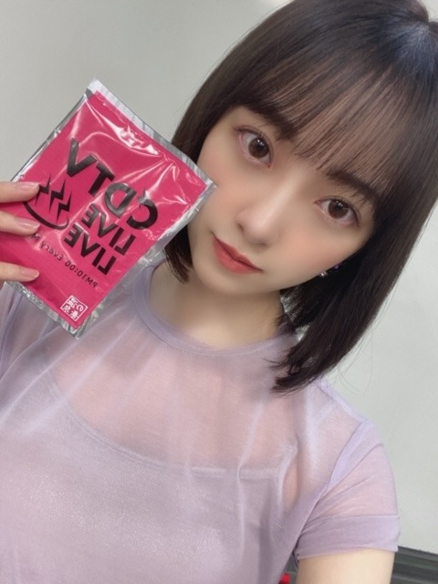
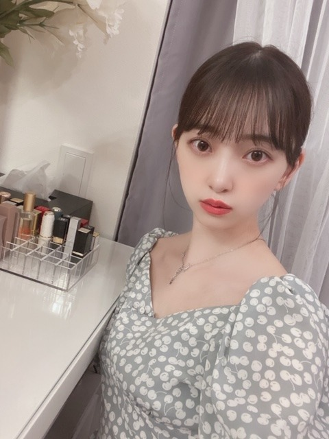
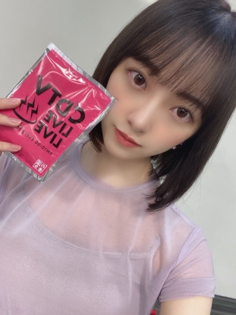
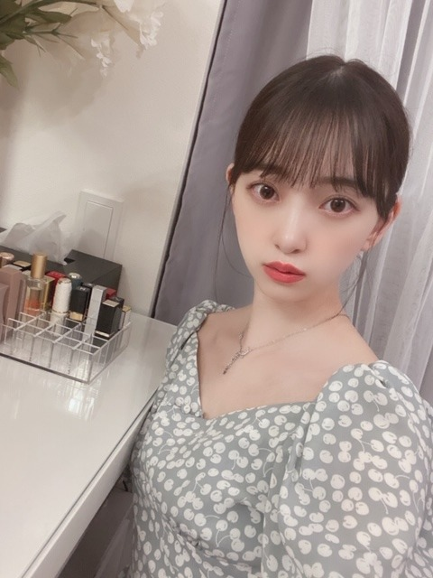

2020/0804Tueえくぼの秘密あげたいわ
こんにちは
わたしの中で
"松田聖子さん"ブームがきています
最近は毎日松田聖子さんの歌を聞いていて
とくに好きなのは
裏庭のガレージで抱きしめて
夏の扉
青い珊瑚礁
瑠璃色の地球
頬に潮風
白いパラソル
渚のバルコニー
レモネードの夏
裸足の季節
星空のドライブ
ピーチシャーベット
天国のキッス
夏のジュエリー
SWEET MEMORIES
水色の朝
です
お家でずっと熱唱しています♩
歌詞もメロディも衣装もツヤツヤのお顔も
全てがキュートでガーリーでロマンティックです

CDTV ありがとうございました！
楽しかったです
来週も出ます^ - ^
目尻がきゅっとあがった目が昔は嫌いだったけど
いつだっけな、しおりが目の角度がすきと言ってくれて
ほんと人間って単純なもので
誰かの一言でコンプレックスが増えたり減ったり
するんですよね
いまは、割と好きです
猫目ってやつです
質問返し
最近観た映画でファンにお勧めしたいベスト3は？
...劇場
最高に素晴らしいこと
日本沈没2020
男性はやけてるか色白かどっちが好きですか？
...どちらかというと色白かな！
未央奈ちゃんお気に入りの夏服はなんですか？
...ワンピース♩
アナスターシャの撮影裏話とかありますか？
...塔？に登るシーンを撮影するとき
本当に寒くてみんなで気合いをいれながら
撮影してました。笑
合間はぎゅってなって暖をとってたなー
未央奈ちゃんはいま幸せですか？
...幸せです！
生きていられること、ご飯を食べられること、
好きなことを仕事にできていること、、、
些細なことも当たり前のようで
当たり前じゃないことだし
わたしは幸せだなと思うことが多々あります
毎日何かしらに感謝しながら生きていきたいです
前髪はどのようにして作ってますか？
いつもきれいな前髪で憧れます！！
...水で濡らしてからドライヤーで乾かして
ブローしてから130度の熱さの
ストレートアイロンで4分割くらいに分けて
前髪をまっすぐにしています
そのあとは細かいクシでサッとときます
未央奈の美容法がしりたいです！
...20代だし内側から綺麗になるのも大事だなと思い
なるべく無添加のものを食べるようにしていて
最近は鍋と豆腐と納豆をとにかく食べて
空腹を満たすようにしています
今年の夏のファッション、
メイクのテーマはなんですか？
...ファッションはロマンティック！
ワンピースにミニバックがすき
メイクはエモエモドラマティック！
くすみカラーを使ってます
サマープレイリスト知りたいな！
...
Mr.Childrenさん 運命
NICO touches the Wallsさん 夏の大三角形
松田聖子さん 瑠璃色の地球
夏の扉 レモネードの夏
back numberさん 海岸通り
坂本洋子さん 海になれたら
フジファブリックさん ブルー
サザンオールスターズさん 栞のテーマ
aikoさん 花火
RADWIMPSさん 夏のせい
RIP SLYMEさん 黄昏サラウンド
好きな男性の服装はなんですか？
...無地でシンプル！
堀ちゃんがソロ曲を歌う事になったとしたら、
どんな楽曲を歌いたいですか？
...んー。なんだろ。歌声低めだから
歌声に合うのがいいなぁ。
曲作ってみたいなー
MBTIっていう性格診断が韓国で流行ってること
知っていますか？？良かったら
未央奈の診断結果を教えてほしいです！
...わたしはENFPでした！
気に入っている服装教えて！
...Her lip to ♡

お気に入り♡
また質問返ししますね！
今日はうたコンです^ - ^
コラボにもでます^ - ^
みてねーーー！
あ、梅雨明けたねーー！
夏やーーー！
こんにちは
わたしの中で
"松田聖子さん"ブームがきています
最近は毎日松田聖子さんの歌を聞いていて
とくに好きなのは
裏庭のガレージで抱きしめて
夏の扉
青い珊瑚礁
瑠璃色の地球
頬に潮風
白いパラソル
渚のバルコニー
レモネードの夏
裸足の季節
星空のドライブ
ピーチシャーベット
天国のキッス
夏のジュエリー
SWEET MEMORIES
水色の朝
です
お家でずっと熱唱しています♩
歌詞もメロディも衣装もツヤツヤのお顔も
全てがキュートでガーリーでロマンティックです

CDTV ありがとうございました！
楽しかったです
来週も出ます^ - ^
目尻がきゅっとあがった目が昔は嫌いだったけど
いつだっけな、しおりが目の角度がすきと言ってくれて
ほんと人間って単純なもので
誰かの一言でコンプレックスが増えたり減ったり
するんですよね
いまは、割と好きです
猫目ってやつです
質問返し
最近観た映画でファンにお勧めしたいベスト3は？
...劇場
最高に素晴らしいこと
日本沈没2020
男性はやけてるか色白かどっちが好きですか？
...どちらかというと色白かな！
未央奈ちゃんお気に入りの夏服はなんですか？
...ワンピース♩
アナスターシャの撮影裏話とかありますか？
...塔？に登るシーンを撮影するとき
本当に寒くてみんなで気合いをいれながら
撮影してました。笑
合間はぎゅってなって暖をとってたなー
未央奈ちゃんはいま幸せですか？
...幸せです！
生きていられること、ご飯を食べられること、
好きなことを仕事にできていること、、、
些細なことも当たり前のようで
当たり前じゃないことだし
わたしは幸せだなと思うことが多々あります
毎日何かしらに感謝しながら生きていきたいです
前髪はどのようにして作ってますか？
いつもきれいな前髪で憧れます！！
...水で濡らしてからドライヤーで乾かして
ブローしてから130度の熱さの
ストレートアイロンで4分割くらいに分けて
前髪をまっすぐにしています
そのあとは細かいクシでサッとときます
未央奈の美容法がしりたいです！
...20代だし内側から綺麗になるのも大事だなと思い
なるべく無添加のものを食べるようにしていて
最近は鍋と豆腐と納豆をとにかく食べて
空腹を満たすようにしています
今年の夏のファッション、
メイクのテーマはなんですか？
...ファッションはロマンティック！
ワンピースにミニバックがすき
メイクはエモエモドラマティック！
くすみカラーを使ってます
サマープレイリスト知りたいな！
...
Mr.Childrenさん 運命
NICO touches the Wallsさん 夏の大三角形
松田聖子さん 瑠璃色の地球
夏の扉 レモネードの夏
back numberさん 海岸通り
坂本洋子さん 海になれたら
フジファブリックさん ブルー
サザンオールスターズさん 栞のテーマ
aikoさん 花火
RADWIMPSさん 夏のせい
RIP SLYMEさん 黄昏サラウンド
好きな男性の服装はなんですか？
...無地でシンプル！
堀ちゃんがソロ曲を歌う事になったとしたら、
どんな楽曲を歌いたいですか？
...んー。なんだろ。歌声低めだから
歌声に合うのがいいなぁ。
曲作ってみたいなー
MBTIっていう性格診断が韓国で流行ってること
知っていますか？？良かったら
未央奈の診断結果を教えてほしいです！
...わたしはENFPでした！
気に入っている服装教えて！
...Her lip to ♡

お気に入り♡
また質問返ししますね！
今日はうたコンです^ - ^
コラボにもでます^ - ^
みてねーーー！
あ、梅雨明けたねーー！
夏やーーー！
2020/08/04 12:12
コメント(305)
みましたぁ♪
こらぼもよかったです＾ー＾
こらぼもよかったです＾ー＾
未央奈ブログ更新ありがとう！
最近歌番組でたくさん未央奈ちゃん見れて嬉しいよ♪うたコンの浴衣姿似合ってて可愛かった♡
生誕tシャツ今年も普段使いしやすいのがいいな〜毎年買ってるから今年も楽しみだよ❤︎生誕tは家で着るのはもったいなく感じるし外で着たいから未央奈ちゃんらしさもありつつ普段着れるのがいい！デザイン楽しみに待ってるね！
またブログ更新待ってるね〜忙しいと思うけど無理せずがんばってね！
最近歌番組でたくさん未央奈ちゃん見れて嬉しいよ♪うたコンの浴衣姿似合ってて可愛かった♡
生誕tシャツ今年も普段使いしやすいのがいいな〜毎年買ってるから今年も楽しみだよ❤︎生誕tは家で着るのはもったいなく感じるし外で着たいから未央奈ちゃんらしさもありつつ普段着れるのがいい！デザイン楽しみに待ってるね！
またブログ更新待ってるね〜忙しいと思うけど無理せずがんばってね！
未央奈お疲れ様です！
ブログ更新ありがとう！
CDTVとうたコンお疲れ様！
未央奈の目俺も好きです！
1番好きなパーツかも
色々質問返しありがとう！
未央奈が幸せでいてくれてめっちゃ嬉しい！
これからもずっと応援してる！
がんばれー！
ブログ更新ありがとう！
CDTVとうたコンお疲れ様！
未央奈の目俺も好きです！
1番好きなパーツかも
色々質問返しありがとう！
未央奈が幸せでいてくれてめっちゃ嬉しい！
これからもずっと応援してる！
がんばれー！
こんばんは、未央奈ちゃん
うたコン、見たよー
浴衣姿めっちゃかわいい。
ドリームバイトも見たし
最近いっぱい未央奈ちゃん見れて嬉しい。
うたコン、見たよー
浴衣姿めっちゃかわいい。
ドリームバイトも見たし
最近いっぱい未央奈ちゃん見れて嬉しい。
数日前に斎藤飛鳥さんと爆笑問題が司会の番組で田中みな美さんを取りあげていたのですが、それを見ているときにふと堀さんをイメージしました。なにが言いたいかというと『情熱大陸』とか『7ルール』に出演してもおかしくないくらい自分の強さと実行力が堀さんにはある、と思っているということです。(すごいえらそうですみませんm(_ _)m)
言葉と行動に敬礼！(￣-￣)ゞ
言葉と行動に敬礼！(￣-￣)ゞ
みおな
今日もお疲れ様です
ごめんなさい！歌コン見逃しました（やっちまった）
最近よく歌番組出るから、気をつけてたんだけど、次は気をつけますね
松田聖子さんは、俺の親父が好きで詳しいです
赤いスイートピーしか知らないけど、昭和を象徴するアイドルですよね
コンプレックスのない人なんていないと思うけど、それは言い換えると弱みだと思います
完璧な人間なんていないし、そうゆう弱みがあるからこそ人間らしいのではと思います
逆に弱みがないと、機械みたいで可愛げが無くなってしまうから、コンプレックスはあったって別にいいと思います
梅雨も明けて、一気に暑いですね
車の色が黒という事もあり、火傷するレベルで車が熱くなります
いつも思うけど、ボンネットに卵でも落とせば、目玉焼きでも出来るのではないかと思います（やらないけど笑）
車は命の次に大切な物なので、しっかり手入れします
質問
みおなはどんなタイプが好きなの？（性別問わず）
またコメントします
ありがとうございました
今日もお疲れ様です
ごめんなさい！歌コン見逃しました（やっちまった）
最近よく歌番組出るから、気をつけてたんだけど、次は気をつけますね
松田聖子さんは、俺の親父が好きで詳しいです
赤いスイートピーしか知らないけど、昭和を象徴するアイドルですよね
コンプレックスのない人なんていないと思うけど、それは言い換えると弱みだと思います
完璧な人間なんていないし、そうゆう弱みがあるからこそ人間らしいのではと思います
逆に弱みがないと、機械みたいで可愛げが無くなってしまうから、コンプレックスはあったって別にいいと思います
梅雨も明けて、一気に暑いですね
車の色が黒という事もあり、火傷するレベルで車が熱くなります
いつも思うけど、ボンネットに卵でも落とせば、目玉焼きでも出来るのではないかと思います（やらないけど笑）
車は命の次に大切な物なので、しっかり手入れします
質問
みおなはどんなタイプが好きなの？（性別問わず）
またコメントします
ありがとうございました
俺けっこう質問したけど、1個も答えてくれないの？
俺、未央奈の目、好き。すごく好き。
口閉じて、喉思いっきり開けて、裏声でハミングを続けたらそのうちいい感じで高音で歌えるようになるかもよ。
瑠奈とのなんかエピソードは？
俺、未央奈の目、好き。すごく好き。
口閉じて、喉思いっきり開けて、裏声でハミングを続けたらそのうちいい感じで高音で歌えるようになるかもよ。
瑠奈とのなんかエピソードは？
堀ちゃんこんばんは。
松田聖子さんの曲は確かにハマりますね。堀ちゃんが挙げている曲はタイトルだけでメロディが頭に浮かびます。SWEET MEMORIESは当初、松田聖子さんの名前を出していなかったと聴いています。
質問
SWEET MEMORIESで松田聖子さんの名前を出していなかった事は知っていましたか？。また、この楽曲が使われていたCMを観たことはありますか？
松田聖子さんの曲は確かにハマりますね。堀ちゃんが挙げている曲はタイトルだけでメロディが頭に浮かびます。SWEET MEMORIESは当初、松田聖子さんの名前を出していなかったと聴いています。
質問
SWEET MEMORIESで松田聖子さんの名前を出していなかった事は知っていましたか？。また、この楽曲が使われていたCMを観たことはありますか？
更新ありがとう！！
CDTV見たよストレートボブクソかわええやっぱ未央奈ボブ最高！！！
昔よりも大人っぽくなったから昔のボブとは違った可愛さがあって良い！！何回も言うけど最高！！
更新頻度高くて本当に嬉しい！来週のCDTVも見る！頑張ってね！
CDTV見たよストレートボブクソかわええやっぱ未央奈ボブ最高！！！
昔よりも大人っぽくなったから昔のボブとは違った可愛さがあって良い！！何回も言うけど最高！！
更新頻度高くて本当に嬉しい！来週のCDTVも見る！頑張ってね！
堀さん、こんばんは。
歌番組に沢山出てくれてて嬉しい限りですけど、そのぶん緊張続きで疲れが溜まってるのかなと心配してます。湯舟に浸かったりでなんとか切り替えつつ頑張ってくださいね。それと魚と飛行機の夢が気になってます。機内食で魚頼んだら周りの乗客が全員顔が魚で一斉に見られるみたいな感じでしょうか。
挙げてくれた曲でプレイリスト作って聞きますね。堀さんが松田聖子さんの曲歌ってる所もいつか聞きたいです。
堀さんの猫目美人なところ好きです。美人猫ですね。
人がコンプレックスを増やすようなことを言わないように気をつけていきますね。どうしても言ってしまったら「コンプレックス抱えてそうな所が良いよね」のワイルドカードでなんとかします。
それで、うたコン見ましたよ。片耳出してる髪型とっても可愛かったです。浴衣姿も大層べっぴんさんでした。堀さんの和装がめちゃくちゃ似合う所は、僕が思う堀さんの好きな所の中でもかなり上位です。
暑さも厳しくなってきたので水分とりつつ頑張ってくださいね。
歌番組に沢山出てくれてて嬉しい限りですけど、そのぶん緊張続きで疲れが溜まってるのかなと心配してます。湯舟に浸かったりでなんとか切り替えつつ頑張ってくださいね。それと魚と飛行機の夢が気になってます。機内食で魚頼んだら周りの乗客が全員顔が魚で一斉に見られるみたいな感じでしょうか。
挙げてくれた曲でプレイリスト作って聞きますね。堀さんが松田聖子さんの曲歌ってる所もいつか聞きたいです。
堀さんの猫目美人なところ好きです。美人猫ですね。
人がコンプレックスを増やすようなことを言わないように気をつけていきますね。どうしても言ってしまったら「コンプレックス抱えてそうな所が良いよね」のワイルドカードでなんとかします。
それで、うたコン見ましたよ。片耳出してる髪型とっても可愛かったです。浴衣姿も大層べっぴんさんでした。堀さんの和装がめちゃくちゃ似合う所は、僕が思う堀さんの好きな所の中でもかなり上位です。
暑さも厳しくなってきたので水分とりつつ頑張ってくださいね。
うたコンお疲れ様でした～(^-^ゞ
コラボも良かった(*^^*)
コラボも良かった(*^^*)
未央奈ちゃんの最近の暗髪ボブが可愛いすぎて歌番組でもつい目で追ってしまう！抜かれたらキャーって声出るくらい可愛い！私も松田聖子さん大好きです、女の子の憧れが詰まってて可愛いよね、、オススメの映画みてみるね！
質問：苦手な事は何ですか?
#堀未央奈への質問
#堀未央奈への質問
みおなちゃん、大好きです
瑠璃色の地球、わかる〜
良い曲ですよね！
良い曲ですよね！
堀さん、おはようございます。
僕の音楽ソフトにも松田聖子さんの曲はたくさん登録されています。一世を風靡したアイドルさんですし、歌もお上手ですから、当時の錚々たる制作陣が曲と歌詞を提供されているわけで、名曲ぞろいとならないはずがありませんものね。
初期の『青い珊瑚礁』や『赤いスイートピー』、中期の『SWEET MEMORIES』や『瑠璃色の地球』、平成に入ってからの『あなたに逢いたくて』など、みんな好き。個人的には『ピンクのモーツァルト』がいいなあ。
堀さんの切れ長で涼しげな目は大いなる魅力の一つ。自信をお持ちになって、いつまでもきれいで澄んだ瞳でいてくださいね。
八月に入ってめっきり暑さがつのってきています。体調に気をつけて夏を楽しみましょう。
ではまたコメントします。
さらばだ、また会おう！（気球に乗って去りぬ〜）
僕の音楽ソフトにも松田聖子さんの曲はたくさん登録されています。一世を風靡したアイドルさんですし、歌もお上手ですから、当時の錚々たる制作陣が曲と歌詞を提供されているわけで、名曲ぞろいとならないはずがありませんものね。
初期の『青い珊瑚礁』や『赤いスイートピー』、中期の『SWEET MEMORIES』や『瑠璃色の地球』、平成に入ってからの『あなたに逢いたくて』など、みんな好き。個人的には『ピンクのモーツァルト』がいいなあ。
堀さんの切れ長で涼しげな目は大いなる魅力の一つ。自信をお持ちになって、いつまでもきれいで澄んだ瞳でいてくださいね。
八月に入ってめっきり暑さがつのってきています。体調に気をつけて夏を楽しみましょう。
ではまたコメントします。
さらばだ、また会おう！（気球に乗って去りぬ〜）
未央奈ちゃんからまさか「松田聖子」というWordを発するとは思ってなかったから、あまりに嬉しかったからお礼を。
「忘れかけていた事を思い出させてくれて、本当にありがとう❣」
オレもデビュー曲からアルバム「Citron」までなら未だに全曲熱唱できるよ‼
追伸 先々月の乃木坂46時間TVの2期生企画で、未央奈ちゃんがヘッドホンをしながらカメラに背を向け、歌いながら踊っていたのを思い出して、「あんな感じで家で熱唱してるんだな」と思わず微笑んでしまったよ。
「忘れかけていた事を思い出させてくれて、本当にありがとう❣」
オレもデビュー曲からアルバム「Citron」までなら未だに全曲熱唱できるよ‼
追伸 先々月の乃木坂46時間TVの2期生企画で、未央奈ちゃんがヘッドホンをしながらカメラに背を向け、歌いながら踊っていたのを思い出して、「あんな感じで家で熱唱してるんだな」と思わず微笑んでしまったよ。
未央奈ちゃん更新ありがとう！
未央奈ちゃんの目めっちゃタイプだよ！
ぱっちりで猫目なところ。
そんな目で見つめられたら…ドキドキ。(ちょろい男です)
Route 246のパフォーマンス最高です！
どの番組も見逃さず見てますよ！
サビが頭から離れません！
今日も聴きながら１日頑張ろうと思います！
では！
未央奈ちゃんの目めっちゃタイプだよ！
ぱっちりで猫目なところ。
そんな目で見つめられたら…ドキドキ。(ちょろい男です)
Route 246のパフォーマンス最高です！
どの番組も見逃さず見てますよ！
サビが頭から離れません！
今日も聴きながら１日頑張ろうと思います！
では！
乃木坂工事中のこれなら語れるグランプリでメンバーの好きなパーツで答えてた時でしょうか？
結構印象的で覚えてます！！
俺も堀ちゃんの目好きです！
これからも、応援してます。
結構印象的で覚えてます！！
俺も堀ちゃんの目好きです！
これからも、応援してます。
1枚目の写真のは
カウントダウンTVの入浴剤？
それを入れた湯船に入って
出るまでカウントダウンするの？


カウントダウンTVの入浴剤？
それを入れた湯船に入って
出るまでカウントダウンするの？
未央奈ちゃんへ
こんにちは、未央奈ちゃん～
そうなんだ！松田聖子さんが好きなんだね！
私はあんまり松田聖子さんの曲を知らなくて。
全然分からないけれど、『青い珊瑚礁』と『赤いスイートピー』は知ってます！笑笑
私は『未央奈ちゃんの外見も内面も全部が大好き』だし、勿論『キリッとしたカワイイ猫目も大好き』です！私は寧ろ、未央奈ちゃんみたいになりたいのに～。笑笑 大好きです～♡
そうだ、そうだ！この前、昨日かな？大切に録画していた番組観たよ～。『はぁというゲーム』、初めて知って、めちゃくちゃ面白かったです♡めっちゃ笑っちゃいました♡笑笑
私も今度から誰かと是非してみたいなあ～と思って～(o^－^o)笑笑
質問返してくれて本当にありがとう♡本当に嬉しかったです♡この想いは永遠に忘れません！
また未央奈ちゃんに聞きたい事が出来て、本当に質問は永遠に尽きないです～(o^－^o)
#堀 未央奈ちゃんに質問
・私、結構緊張しいで、何か用事があったりする日はドキドキと緊張してしまうのですが、『未央奈ちゃんのリラックス方法というか、落ち着ける方法』は何かあったりとかされますか？
・私、結構自分に自信が持てなくて、多分内面が初ちゃんみたいな女の子なんだと思います。
『あんまり人に流され過ぎないで、影響とかを受け過ぎないで、自分自身とはぐれず、見失わない為に何か心がけている事』とかはありますか？
うーん、まだまだ未央奈ちゃんに聞きたい事絶対にたっくさんあるのに～ 思い付けなくて、悔しい～笑笑
ホットギミックガールミーツボーイさん、まだ観たいのに全然観れていないけれど、予告編はずっと前に観て、私が好きな言葉は初ちゃんの『私はその時の私の気持ちを大切にしていたい！』みたいな事を叫んだ場面があって、とても心に沁みて、今までは何かあったら、自分を責めてばっかりだったけれど、それからは『私もあんまり何かあってもあんまり自分を責めなくなれて。』予告編しかまだ観れていないけれど、この言葉で何だか励まされたというか、心がとても軽くなれて、私はこの言葉も大好きです♡
♡未央奈ちゃんの事、本当に大好き♡ ♡愛♡
こんにちは、未央奈ちゃん～
そうなんだ！松田聖子さんが好きなんだね！
私はあんまり松田聖子さんの曲を知らなくて。
全然分からないけれど、『青い珊瑚礁』と『赤いスイートピー』は知ってます！笑笑
私は『未央奈ちゃんの外見も内面も全部が大好き』だし、勿論『キリッとしたカワイイ猫目も大好き』です！私は寧ろ、未央奈ちゃんみたいになりたいのに～。笑笑 大好きです～♡
そうだ、そうだ！この前、昨日かな？大切に録画していた番組観たよ～。『はぁというゲーム』、初めて知って、めちゃくちゃ面白かったです♡めっちゃ笑っちゃいました♡笑笑
私も今度から誰かと是非してみたいなあ～と思って～(o^－^o)笑笑
質問返してくれて本当にありがとう♡本当に嬉しかったです♡この想いは永遠に忘れません！
また未央奈ちゃんに聞きたい事が出来て、本当に質問は永遠に尽きないです～(o^－^o)
#堀 未央奈ちゃんに質問
・私、結構緊張しいで、何か用事があったりする日はドキドキと緊張してしまうのですが、『未央奈ちゃんのリラックス方法というか、落ち着ける方法』は何かあったりとかされますか？
・私、結構自分に自信が持てなくて、多分内面が初ちゃんみたいな女の子なんだと思います。
『あんまり人に流され過ぎないで、影響とかを受け過ぎないで、自分自身とはぐれず、見失わない為に何か心がけている事』とかはありますか？
うーん、まだまだ未央奈ちゃんに聞きたい事絶対にたっくさんあるのに～ 思い付けなくて、悔しい～笑笑
ホットギミックガールミーツボーイさん、まだ観たいのに全然観れていないけれど、予告編はずっと前に観て、私が好きな言葉は初ちゃんの『私はその時の私の気持ちを大切にしていたい！』みたいな事を叫んだ場面があって、とても心に沁みて、今までは何かあったら、自分を責めてばっかりだったけれど、それからは『私もあんまり何かあってもあんまり自分を責めなくなれて。』予告編しかまだ観れていないけれど、この言葉で何だか励まされたというか、心がとても軽くなれて、私はこの言葉も大好きです♡
♡未央奈ちゃんの事、本当に大好き♡ ♡愛♡
みおなちゃん、こんにちは。
うたコン、僕は見たよ。録画しながら見たよ。Route 246、何回聴いても、めっちゃいい曲ですね。
パフォーマンスも、何回見ても、めっちゃかっこいいですね。
みおなちゃん、めっちゃ綺麗で、めっちゃかわいかったです。
浴衣姿のみおなちゃん、めっちゃかわいかったです。
ドリームバイト、僕は見たよ。録画して見ました。
フレンチシェフを目指す俊智君、関谷シェフの審査がありましたね。俊智君、単純なミスをしてしまったり、とても緊張していましたね。一品を作りましたが、関谷シェフの評価は、厳しい評価でしたね。
みおなちゃん、体調に気をつけて仕事頑張ってね。
またコメントするね。
うたコン、僕は見たよ。録画しながら見たよ。Route 246、何回聴いても、めっちゃいい曲ですね。
パフォーマンスも、何回見ても、めっちゃかっこいいですね。
みおなちゃん、めっちゃ綺麗で、めっちゃかわいかったです。
浴衣姿のみおなちゃん、めっちゃかわいかったです。
ドリームバイト、僕は見たよ。録画して見ました。
フレンチシェフを目指す俊智君、関谷シェフの審査がありましたね。俊智君、単純なミスをしてしまったり、とても緊張していましたね。一品を作りましたが、関谷シェフの評価は、厳しい評価でしたね。
みおなちゃん、体調に気をつけて仕事頑張ってね。
またコメントするね。
あ～、みおちとゲーム対決がしたい、、笑
ねる～♪(^ ^) (
( )
)
ねる～♪(^ ^)
おはよ～！おぉ！？たくさん寝れたんだね！それは良かったー＼(^^)／
最近眠りが浅いようなのが多かったみたいだから良かったね！
おー、メイクさんw
未央奈がぼーっとしてる=絢音ちゃん関係っていう発想さすがだね(￣▽￣;)
ま、確かにそれはそれでだねーw
2人の関係性の大きさや大事さをそのメイクさんは分かってくれてるってことなのかもね！
うーん、そうかー。歌番組とか増えてきたけど出るメンバーはだいたい同じになっちゃうもんねぇ。もっと会う機会が増えると良いね！
ひとまず、メールだけじゃなくてテレビ電話で顔見ながらおしゃべりをするんだー☆
最近眠りが浅いようなのが多かったみたいだから良かったね！
おー、メイクさんw
未央奈がぼーっとしてる=絢音ちゃん関係っていう発想さすがだね(￣▽￣;)
ま、確かにそれはそれでだねーw
2人の関係性の大きさや大事さをそのメイクさんは分かってくれてるってことなのかもね！
うーん、そうかー。歌番組とか増えてきたけど出るメンバーはだいたい同じになっちゃうもんねぇ。もっと会う機会が増えると良いね！
ひとまず、メールだけじゃなくてテレビ電話で顔見ながらおしゃべりをするんだー☆
ブログ更新ありがとう!
今週末にパネル展行きます!
今週末にパネル展行きます!
未央奈ちゃんこんばんは！ありがとうございます‼楽しみにしてます‼頑張ります‼気をつけて下さい！ありがとうございます‼
みおなってお風呂出てから必ずやることってなんですか？
ブログ更新してくれてありがとう！！
みおな大好きです❤️
ブログ更新してくれてありがとう！！
みおな大好きです❤️
堀ちゃん！更新ありがとう！
聖子ちゃんブームきてるんですか！？
ほんとに名曲ぞろいよね〜〜笑
夏！って感じの曲が多いよね〜
個人的には
sweetmemory好きかな〜笑
CDTV見たよ！！
かっこよかったよ！！
堀ちゃんの踊りにキレが
増してましたよ！
backnumberの海岸通り！
自分もほんとに好きな曲です！
夏の江ノ島の海岸沿いで
聴いたら最高なんですよね！
もちろんサザンも！笑
堀ちゃんに質問いいですか？
○堀ちゃんがこれからの時期
オススメする場所はどこ？？
ぜひ聞いてみたいです！
待ってます！
お気に入りのショット
ほんと綺麗に撮れてて可愛い！
撮影技術も上手くなってるね！笑
では！
次回の更新も楽しみに待ってます！
長くてごめんなさい
体調1番で！！
聖子ちゃんブームきてるんですか！？
ほんとに名曲ぞろいよね〜〜笑
夏！って感じの曲が多いよね〜
個人的には
sweetmemory好きかな〜笑
CDTV見たよ！！
かっこよかったよ！！
堀ちゃんの踊りにキレが
増してましたよ！
backnumberの海岸通り！
自分もほんとに好きな曲です！
夏の江ノ島の海岸沿いで
聴いたら最高なんですよね！
もちろんサザンも！笑
堀ちゃんに質問いいですか？
○堀ちゃんがこれからの時期
オススメする場所はどこ？？
ぜひ聞いてみたいです！
待ってます！
お気に入りのショット
ほんと綺麗に撮れてて可愛い！
撮影技術も上手くなってるね！笑
では！
次回の更新も楽しみに待ってます！
長くてごめんなさい
体調1番で！！
目が特に綺麗で特徴的ですね。
ショートにしたら一段と際立つかんじ、ひとつ前のスポーティー未央奈ちゃんめちゃめちゃ可愛くカッコよく似合いますし。
やっぱり陸上部ってかんじ基本その路線をベースに、そこから様々なバリエーションでファッションからスタイルに幅を持たせるのも良いかも？
てか目の感じとかって、たぶん顔の角度でも変わるので、アゴを少し引くからフラット、上向きでもかなり顔の表情から表現にも幅の広がりも出てきそうなんですよね。
ショートにしたら一段と際立つかんじ、ひとつ前のスポーティー未央奈ちゃんめちゃめちゃ可愛くカッコよく似合いますし。
やっぱり陸上部ってかんじ基本その路線をベースに、そこから様々なバリエーションでファッションからスタイルに幅を持たせるのも良いかも？
てか目の感じとかって、たぶん顔の角度でも変わるので、アゴを少し引くからフラット、上向きでもかなり顔の表情から表現にも幅の広がりも出てきそうなんですよね。
口紅のCMソングだった「Rock'n Rouge」は可愛らしく
未央奈さんにピッタリの曲に思います
暑いですけど最近どうお過ごしですか？
暑いんで熱中症には気をつけて！
歌番組に出演する事が増えて沢山、乃木坂を見れる
場面があり嬉しい
暑いんで熱中症には気をつけて！
歌番組に出演する事が増えて沢山、乃木坂を見れる
場面があり嬉しい
未央奈！
可愛すぎる。以上！笑
では
可愛すぎる。以上！笑
では
冷えたレモネード！
あと貴方に会えればもう一足早い夏、ですね。
懐かしいなぁ。よくこんなマイナー曲を。
あと貴方に会えればもう一足早い夏、ですね。
懐かしいなぁ。よくこんなマイナー曲を。
ブログ更新ありがとうございます
質問です
未央奈さんが使っている柔軟剤は
なんですか？
大好きです
これからも頑張ってください
応援してます
質問です
未央奈さんが使っている柔軟剤は
なんですか？
大好きです
これからも頑張ってください
応援してます
堀ちゃんこんばんは！
昨日のうたコン観ました！
浴衣姿の堀ちゃんめっちゃめちゃ可愛かったですー！(o^^o)♩
この前ブログでおうち夏祭り開催するって聞いたあたりから、堀ちゃんの浴衣姿が見たいなぁと思っていました(^^)
そしたらこんなに早く見られるなんて！ガッツポーズでしたねp( ´ ▽ ` )q笑
The 浴衣美人ですね、今の髪色と髪型がまた昨日の浴衣の色味と絶妙に合ってました(o^^o)
地は白系ですが、模様が少し濃い目の色だったから、暗めの髪色がマッチしてたのかなぁと思っています( ´ ▽ ` )
自然に下ろしたつやつや髪のボブは浴衣との相性抜群ですね、もちろん堀ちゃんのお顔立ちあっての髪型と浴衣ですが(^^)♩
ずっと思ってますよ？ずっと思ってますけど改めて、堀ちゃんのお顔はめちゃくちゃ可愛くて、僕は堀ちゃんのお顔立ちがドストライクで好みなんだなぁと感じました( ´ ▽ ` )♩
梅雨明け早々ですが、堀ちゃんの浴衣姿を見られて既に今年の夏に一片の悔いなしです笑
あとは楽しい夏になっていくだけだ〜(o^^o)♩
ちなみに、僕も堀ちゃんの目の角度めっちゃ好きです、久保ちゃんに共感( ´ ▽ ` )♩
あと、目の形も好きです、どんどん可愛くなっていますけど、ここは昔からずっと変わってなくて好きだなぁと(^^)
個人的な好みとして猫目が好きっていうわけではないんですが、堀ちゃんの猫目が好きです(o^^o)
堀ちゃんは猫目でも、柔らかい印象を感じますし、笑ったときの朗らかな可愛さなんて本当に愛らしくてめっちゃ好きです( ´ ▽ ` )♩
そもそも堀ちゃんの好きじゃないところなんてありませんが(^^)
誰かの何気ない一言ってほんとに大きいですよねぇ、特に見た目って変わらないですからなおさら( ´ ー ` )
小さい頃に言われたこととか、今でも忘れられなくてコンプレックス気味だったりしちゃいます(^^;)
逆も然りで、褒めてくれたところはその人と会わなくなった今でも少し自信が持てたり(o^^o)
誰かの心にプラスの感情が残り続ける言葉を送っていきたいなぁと、改めて思います( ´ ▽ ` )
質問返し、自分の質問じゃなくても堀ちゃんのことたくさん知られて嬉し楽しい(o^^o)♩
梅雨明けましたね！ついに夏やー！( ´ ▽ ` )
暑いのが嬉しいです(^^)
例年とは違う状況ですが、変わらず夏はやってくるので、折角の夏を楽しめることは存分に楽しんでいきましょう(o^^o)
お互い良い2020年の夏になりますように！
では！またコメントさせてくださいー！( ´ ▽ ` )
昨日のうたコン観ました！
浴衣姿の堀ちゃんめっちゃめちゃ可愛かったですー！(o^^o)♩
この前ブログでおうち夏祭り開催するって聞いたあたりから、堀ちゃんの浴衣姿が見たいなぁと思っていました(^^)
そしたらこんなに早く見られるなんて！ガッツポーズでしたねp( ´ ▽ ` )q笑
The 浴衣美人ですね、今の髪色と髪型がまた昨日の浴衣の色味と絶妙に合ってました(o^^o)
地は白系ですが、模様が少し濃い目の色だったから、暗めの髪色がマッチしてたのかなぁと思っています( ´ ▽ ` )
自然に下ろしたつやつや髪のボブは浴衣との相性抜群ですね、もちろん堀ちゃんのお顔立ちあっての髪型と浴衣ですが(^^)♩
ずっと思ってますよ？ずっと思ってますけど改めて、堀ちゃんのお顔はめちゃくちゃ可愛くて、僕は堀ちゃんのお顔立ちがドストライクで好みなんだなぁと感じました( ´ ▽ ` )♩
梅雨明け早々ですが、堀ちゃんの浴衣姿を見られて既に今年の夏に一片の悔いなしです笑
あとは楽しい夏になっていくだけだ〜(o^^o)♩
ちなみに、僕も堀ちゃんの目の角度めっちゃ好きです、久保ちゃんに共感( ´ ▽ ` )♩
あと、目の形も好きです、どんどん可愛くなっていますけど、ここは昔からずっと変わってなくて好きだなぁと(^^)
個人的な好みとして猫目が好きっていうわけではないんですが、堀ちゃんの猫目が好きです(o^^o)
堀ちゃんは猫目でも、柔らかい印象を感じますし、笑ったときの朗らかな可愛さなんて本当に愛らしくてめっちゃ好きです( ´ ▽ ` )♩
そもそも堀ちゃんの好きじゃないところなんてありませんが(^^)
誰かの何気ない一言ってほんとに大きいですよねぇ、特に見た目って変わらないですからなおさら( ´ ー ` )
小さい頃に言われたこととか、今でも忘れられなくてコンプレックス気味だったりしちゃいます(^^;)
逆も然りで、褒めてくれたところはその人と会わなくなった今でも少し自信が持てたり(o^^o)
誰かの心にプラスの感情が残り続ける言葉を送っていきたいなぁと、改めて思います( ´ ▽ ` )
質問返し、自分の質問じゃなくても堀ちゃんのことたくさん知られて嬉し楽しい(o^^o)♩
梅雨明けましたね！ついに夏やー！( ´ ▽ ` )
暑いのが嬉しいです(^^)
例年とは違う状況ですが、変わらず夏はやってくるので、折角の夏を楽しめることは存分に楽しんでいきましょう(o^^o)
お互い良い2020年の夏になりますように！
では！またコメントさせてくださいー！( ´ ▽ ` )
あれ・・・！？日没は、テレビアニメでは？
サマーソングみたく、好きなジャンル映画の、
プレイガイドの一覧表みたいなのはないんですか・・・！？映画タイトルは覚えにくい・・・？
こっちは曲名の長い英語タイトルほど覚えにくいです・・・。
因みに、最近面白いオススメ映画は、透明人間と
ナイブズ・アウトとジョジョラビットです！！！
どれも二転三転する超展開で見応えあった・・・
今夜はDCフィルムズのマンオブスティール観たら
寝よう・・・。明日も体調に気をつけて！
サマーソングみたく、好きなジャンル映画の、
プレイガイドの一覧表みたいなのはないんですか・・・！？映画タイトルは覚えにくい・・・？
こっちは曲名の長い英語タイトルほど覚えにくいです・・・。
因みに、最近面白いオススメ映画は、透明人間と
ナイブズ・アウトとジョジョラビットです！！！
どれも二転三転する超展開で見応えあった・・・
今夜はDCフィルムズのマンオブスティール観たら
寝よう・・・。明日も体調に気をつけて！
おはよう、未央奈ちゃん
今日も暑いねー
くれぐれも体調には気を付けてね。
今日も１日頑張っていきましょう。
松田聖子さん熱唱してるの見てみたい。笑
今日も暑いねー
くれぐれも体調には気を付けてね。
今日も１日頑張っていきましょう。
松田聖子さん熱唱してるの見てみたい。笑
堀ちゃん、おはよう！
今日も朝から、ミナモ体操をしたよ！
上がった目じりも、素敵だよ！
自信もって！！
今日も暑いね。
水分とってね。
今日も朝から、ミナモ体操をしたよ！
上がった目じりも、素敵だよ！
自信もって！！
今日も暑いね。
水分とってね。
80年代は聖子さんのファンクラブ入っていました。
聖子さんの曲は、まだまだいい曲が沢山有るので、堀さんにはもっと聖子さんの曲歌える様になって欲しいです。
なんだか分かりませんが、今は乃木坂にハマっています。
聖子さんの曲は、まだまだいい曲が沢山有るので、堀さんにはもっと聖子さんの曲歌える様になって欲しいです。
なんだか分かりませんが、今は乃木坂にハマっています。
おはよ
今日も暑い
今日、広島県民にとって75年目の節目
かけがえのない1日を迎えますね。
今日も暑い
今日、広島県民にとって75年目の節目
かけがえのない1日を迎えますね。
デカ目の猫目は超可愛いよね
おれも好きよ
おれも好きよ
未央奈ちゃんお疲れ様です。
普段の未央奈ちゃんて可愛い感じが多いイメージです。
歌ってるときは格好いい。
写真集やグラビアなんかは、綺麗だなぁって思うけど、どこが一番力入れてるところなのかな？
普段の未央奈ちゃんて可愛い感じが多いイメージです。
歌ってるときは格好いい。
写真集やグラビアなんかは、綺麗だなぁって思うけど、どこが一番力入れてるところなのかな？
みおち～♪(^ ^)(あ～、一緒にゲームがしたい、、笑)
いつも、かわいくて憧れ!
未央奈ちゃんのボブ、大好きです。
＃未央奈への質問
おすすめのプチプラリップはありますか?
ぜひ、教えてください!!
未央奈ちゃんのボブ、大好きです。
＃未央奈への質問
おすすめのプチプラリップはありますか?
ぜひ、教えてください!!
松田聖子さん。 細野(晴臣)さん作曲のものを さかのぼって聴いた事があります
もちろん他の有名な曲も何曲かは知っていますが、ホントに「声」の魅力の大きさを感じます
あと 山口百恵さんも 当時18歳とかで その歌を歌ってたのか！っていうのを知ると驚くしかないです。
もちろん他の有名な曲も何曲かは知っていますが、ホントに「声」の魅力の大きさを感じます
あと 山口百恵さんも 当時18歳とかで その歌を歌ってたのか！っていうのを知ると驚くしかないです。
俺もわたがし食べたい
わたがし機があればねー
ハイチュウで作れるの知ってる？( *・ω・)ノ
わたがし機があればねー
ハイチュウで作れるの知ってる？( *・ω・)ノ
猫目、可愛くて私は好きですよ。
ほんとかわいすぎる。
やっぱり食事とか色々努力してるんだね。みおなプロ意識がすごい偉いわ。ますます惚れるわ。
やっぱり食事とか色々努力してるんだね。みおなプロ意識がすごい偉いわ。ますます惚れるわ。
未央奈ちゃんこんばんは！ありがとうございます‼楽しみにしてます‼気をつけて下さい！頑張ります‼大変です！ありがとうございます


堀さんっ♪
ブログ更新、ありがとうございます！
松田聖子さんの曲、聴かれているんですね！
僕も松田聖子さんの楽曲は、割と好きな曲が多くて、
たまに聴いたりします。
なかでもイチバン好きな曲は、
「青い珊瑚礁」です。
この曲を聴くと、ワクワクしてテンションが上がり、
なんか、こう…
キラキラと光り輝く、眩しい夏をイメージします。
今でも音楽番組なとで、松田聖子さんの昔の映像が流れているのを観ると、
ルックス、歌声、雰囲気などの透明感に本当に驚かされます。
世代を超えて愛されるアーティストですねっ♪
ところで、
堀さん、昔はご自分の目にコンプレックスをお持ちだったんですね。
意外です！
僕は、堀さんのお顔のパーツ、それぞれが素敵だなって思いますし、
堀未央奈というルックス全体がとてもお綺麗で、
羨ましくさえ、あります。笑
いつも思うのですが、堀さんって、
ホントお姫さまだなって！
いや、雰囲気やルックスがですよ？
本当に素敵だと思います。
今年の夏は、いつもよりも少しだけ短かそうですが、
それでも夏本番っ♪
存分に楽しみましょう！